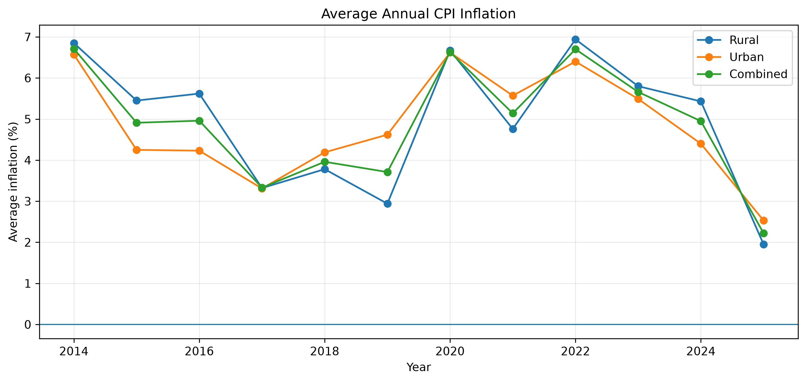

CONSUMER PRICE INDEX | INDIA
India's Inflation Hits a Decade Low as Food Prices Fall
India's inflation fell to 2.22% in 2025, the lowest average in the past ten years (2016–2025), as falling vegetable and pulse prices dragged down food costs.

Average annual CPI inflation for rural, urban and combined India, 2014–2025.
India's inflation falls to 2.22%
Food and beverage prices turned negative, falling 1.85% in December, according to Consumer Price Index data covering the period 2013–2025, base year 2012, from India's Ministry of Statistics and Programme Implementation.
Vegetable prices fell 18.5% and pulse prices fell 15% over the same period. Rural inflation dropped to 1.95% and urban inflation to 2.53%, down from 5.43% and 4.40% respectively the year before.
The inflation nears the bottom of the Reserve Bank of India's 2%–6% tolerance band.
A three-year decline
The decline has been building for three years. Combined inflation stood at 6.70% in 2022, before falling to 5.66% in 2023, 4.95% in 2024, and finally 2.22% in 2025.
The drop wasn't smooth. Month to month, inflation swung up and down more in 2025 than in most other years in the dataset, making it the third-most volatile year on record, behind only 2014 and 2019.
Food prices drive the December fall
The highest inflation months in the dataset were January through May 2014; the lowest were October through December 2025.
Outside food and beverages, every other broad category continued to rise in December. Housing gained 2.86%, fuel and light 1.97%, pan, tobacco and intoxicants 2.96%, and clothing and footwear 1.44%.
Miscellaneous goods rose fastest of all, up 6.17%, the only broad category running above its own historical average.
Personal care and effects climbed even further, up 28.07%, the sharpest increase of any individual commodity that month. The Consumer Food Price Index fell 2.71% in December.
The long-term picture
The longer-term trend still points up: the Combined CPI Index has risen 89.29% since 2013, with the rural price index up 90.20% and the urban index up 88.37%, using 2012 as the base year.
Rural inflation has typically run slightly above urban over the full series, by an average of 0.11 percentage points, with rural inflation higher in 83 of 156 months on record.
But urban has outpaced rural before too, most sharply in May 2019, when the gap hit 2.65 percentage points, and again in a cluster of months in early 2021.
In 2025, rural inflation fell faster than urban, likely because rural CPI baskets are more heavily weighted toward food, making this year's food-price collapse hit rural inflation harder.
What happens next?
Looking ahead, whether 2025's food-driven decline holds will depend on factors outside the data itself.
India's harvest seasons have a significant impact on the price of vegetables and pulses: the kharif season, sown during the monsoon, is harvested between September and December, while the rabi season, sown in winter, is harvested between March and April.
A strong harvest typically means more supply and lower prices; a weak or delayed one can push prices back up.
Since vegetables and pulses drove most of 2025's food-price drop, the outcome of the current kharif harvest will matter for whether these lower prices hold.
Whether the decline continues or reverses should become clearer as kharif supplies reach markets and fresh CPI data is released in the coming months.
Source: Consumer Price Index data, Ministry of Statistics and Programme Implementation, Government of India. Data covers 2013–2025; base year 2012.